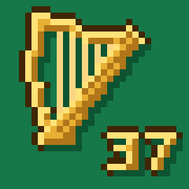
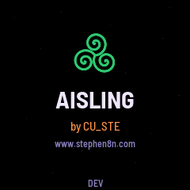
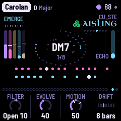
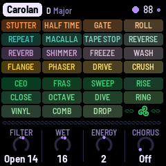

aisling · Irish ambient for the M-VAVE SMK-37 Elite
by CU_STE · www.stephen8n.com
1.3.1, released. In November 2026 AISLING 1.3.1 was installed on an SMK-37 Elite, played, taken off again with M-VAVE's own firmware, and installed again. The package is in its release; it installs from a computer for now, as the docs say, and they say what was checked and what is still open.
It is for the SMK-37 Elite only (not the SMK-37 Pro), on M-VAVE's firmware V016.

AISLING is a generative instrument for the M-VAVE FM-1, after the harpers and the west of Ireland: a harp's ostinato over a held drone, a second harp drifting against it, a flute far back in the reverb, with surf, wind or rain behind. The SMK-37 Elite has the FM-1's chip, so it can run the same code: the same engine, the same eight pieces, saved the same way, on a 37-key keyboard. Its buttons and knobs take the FM-1's jobs, its middle 27 keys are the FM-1's, its pads play the effects and its faders set the mix.



The Elite's screens, from its simulator: the same, pixel for pixel, as the FM-1's.
Where it stands
- On a computer. AISLING builds for the Elite from the FM-1's tree, and the FM-1's own build is unchanged to the byte. The Elite's simulator plays all 34 of the FM-1's test scenarios with byte-identical results, and its own: MASTER on a knob, the 37 keys, the battery. The installer and the rescue tool know the Elite's package, and never write the parts of its memory that are the Elite's own.
- A backup. A whole copy of an Elite's memory, read twice and compared, before anything was written to it.
- The first install. Every button, knob and key checked on the Elite, and the way back to M-VAVE's firmware proven: off, and on again.
- The pads and faders. The pads play the sixteen effects, and the faders set the mix.
- An hour's run. An hour playing on an Elite with no dropouts.
- A release. 1.3.1's package on GitHub, installed from a computer.
- The web installer. AISLING put on an Elite from Chrome or Edge, as on the FM-1.
- Later. The pitch wheel bends the Lead, the mod wheel opens the filters, the outer white keys extend the Lead's scale.
AISLING is by CU_STE (www.stephen8n.com). Its board layer
for the Elite follows M. Geisler's (genkigenki) SMK-37 ports, on the smk37 branches of
fm1-amb and
fm1-fomni, written again for AISLING; the hardware's
facts are from M. Geisler's guide, FM-1 to SMK-37 Pro
(CC BY-NC 4.0), cited, not copied. AISLING itself is a fork of
NACHTFAHRT by FartyPants, based on
DUB-1 by sbegueria, itself based on
AMB-1 by Charles Vestal; the platform is Felucca by Leo Kuroshita
(Hügelton Instruments). GPL-3.0; LICENSING.md has the rest.
M-VAVE, FM-1 and SMK-37 are trademarks of their owners. AISLING is not affiliated with M-VAVE, Hügelton Instruments or
the authors of the ports it follows. Its faces are Barlow Semi Condensed and IBM Plex Mono (SIL OFL 1.1).